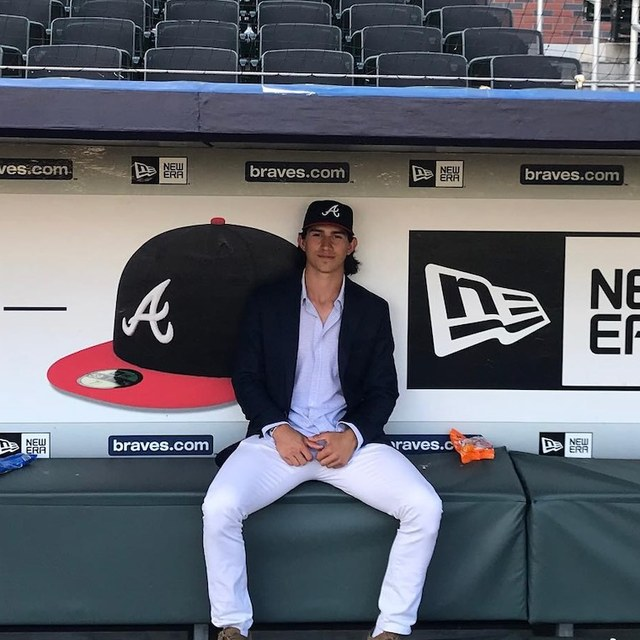

Why ProConnect Exists
ProConnect started with a problem I kept running into as a player. Every offseason, running a camp meant chasing down an open facility and getting the word out to families, all while dealing with the logistics personally. At the same time, training facilities had space sitting empty and families were looking for quality coaching they could trust.
The three groups needed each other, but there was no single place to bring them together. ProConnect is built to be that place: one spot where experienced players, facilities, and families can connect and get a great camp off the ground.
About the Founder

ProConnect was founded by Stephen Paolini, who spent eight years playing professional baseball, including seven years in the Atlanta Braves organization and one year with the Maryland Blue Crabs. All that time on the field is the reason ProConnect exists and the reason it focuses on one thing above all: connecting families with coaching from people who have actually played the game.